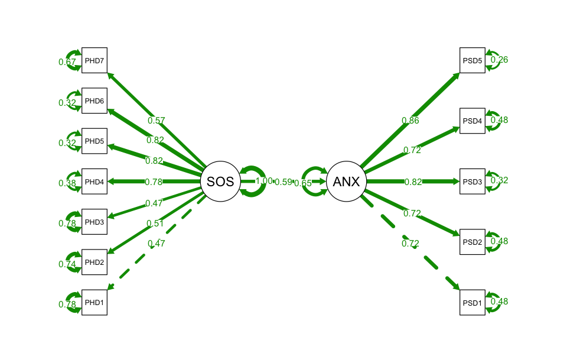
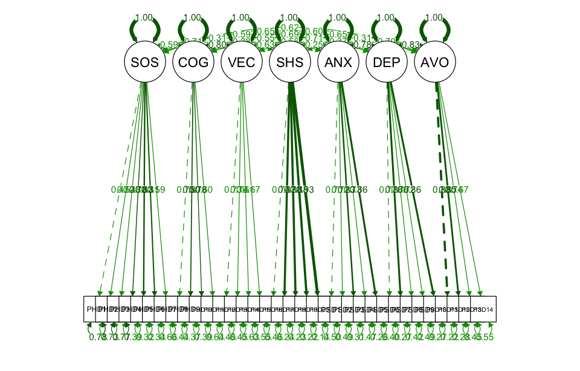
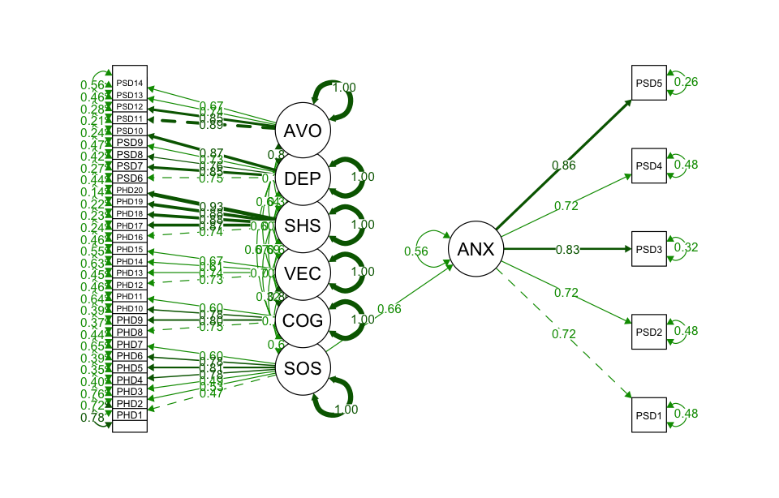
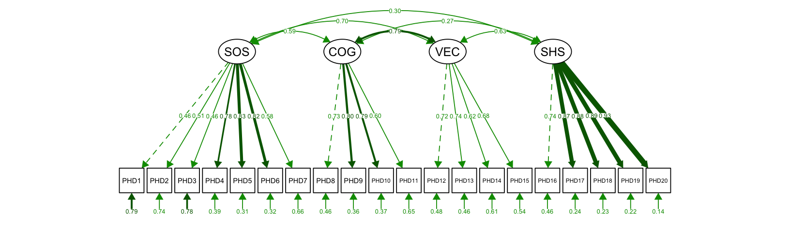
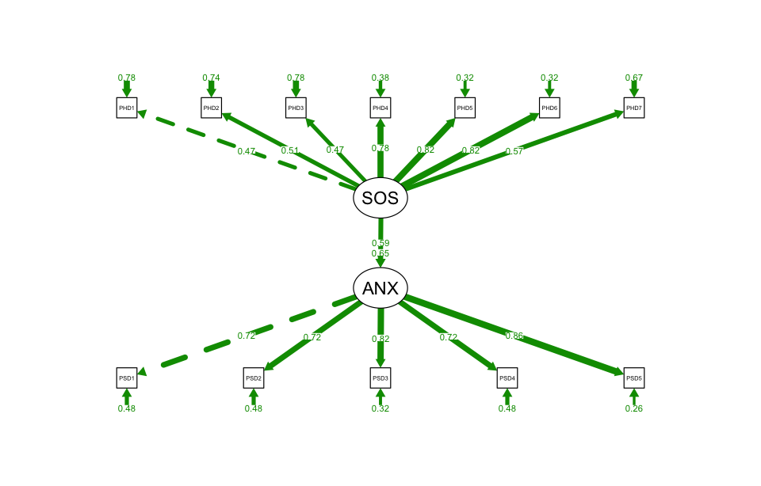
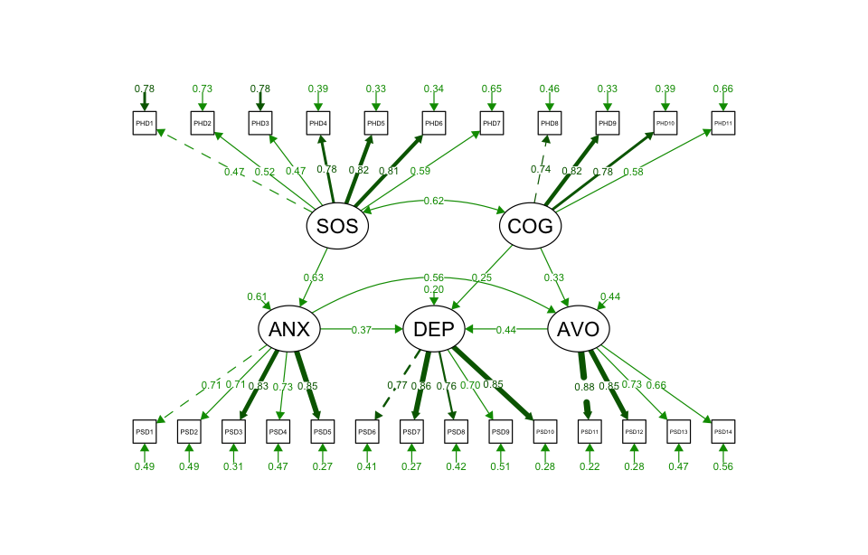

library(tidyverse)
library(lavaan)
library(semPlot)26 Structural equation model
Structural equation modeling (SEM) is a statistical technique that allows for the estimation of complex relationships between observed and latent variables. SEM combines the strengths of path analysis, confirmatory factor analysis (CFA), and regression analysis, allowing for the simultaneous handling of measurement errors, latent variables, and observed variables. It enables us to test complex causal relationships. The SEM introduced in this chapter is primarily used for CFA. CFA is widely used in fields like psychology, education, and social sciences to validate theoretical constructs and measurement instruments.
26.1 Prerequisite
26.2 Overview
26.2.1 Confirmatory factor analysis
Confirmatory factor analysis (CFA) is often used to test whether a hypothesized factor structure fits the observed data. Unlike exploratory factor analysis (EFA, see Section 24.3.1 ), which is used to discover the underlying structure of data without predefined assumptions, CFA is applied when researchers have specific theories or models about the relationships between observed variables and their underlying latent factors. It is frequently used in scale design for estimating parameters and assessing the model’s goodness-of-fit, Example 1 is an scale for stroke patient-reported outcome measure. Based on this example, the readers can better understand the concepts and principles of CFA and SEM.
Example 1:
A group utilized the stroke patient-reported outcome measure (hereafter referred to as Stroke-PROM) to survey 295 stroke patients in order to assess their treatment outcomes. The Stroke-PROM includes four dimensions with 20 items in the physiological domain, three dimensions with 14 items in the psychological domain, two dimensions with 7 items in the social domain, and one dimension with 5 items in the treatment domain. The structure of Stroke-PROM is shown in Table 26.1 .
| Domain | Dimension | Variable | Number_of_Items | Items_Included |
|---|---|---|---|---|
| Physiological domain | Somatic symptoms | SOS | 7 | PHD1 ~ PHD7 |
| Cognitive ability | COG | 4 | PHD8 ~ PHD11 | |
| Verbal communication | VEC | 4 | PHD12 ~ PHD15 | |
| Self-help skill | SHS | 5 | PHD16 ~ PHD20 | |
| Psychological domain | Anxiety | ANX | 5 | PSD1 ~ PSD5 |
| Depression | DEP | 5 | PSD6 ~ PSD10 | |
| Avoidance | AVO | 4 | PSD11 ~ PSD14 | |
| Social domain | Social contact | SOC | 3 | SOR1 ~ SOR3 |
| Family support | FAS | 4 | SOR4 ~ SOR7 | |
| Treatment domain | Satisfaction | SAT | 5 | THA1 ~ THA5 |
26.2.2 Components of SEM
The structure of a SEM consists of several key components:
Observed variables
Observed variables, also known as manifest variables, these are the variables that are directly measured in a study. They are the actual data collected from participants or experiments. For example, in Table 26.1 , items or questions that participants respond to are observed variables because they are directly measured.
Latent variables
Latent variables are variables that are not directly measured but are inferred from observed variables. Latent variables represent underlying constructs or factors that are assumed to influence the observed variables. In Table 26.1 , examples of latent variables include psychological traits like anxiety, depression, or avoidance, which cannot be measured directly but can be inferred through a set of observed vairables.
Exogenous variables
Exogenous variables are the independent variables in the model. They are not explained by any other variables within the model and are used to explain the variation in the endogenous variables. Exogenous variables are typically assumed to be external to the model.
Endogenous variables
Endogenous variables are the dependent variables in the model that are explained by other variables. They are influenced by both exogenous variables and other endogenous variables. In SEM, endogenous variables can be either latent or observed variables.
Measurement model
The measurement model describes the relationships between latent variables and observed variables. It is typically estimated using CFA. For each latent variable \boldsymbol \eta and its corresponding observed variables \mathbf y, the measurement model can be expressed as:
\mathbf y = \boldsymbol \Lambda_\mathbf y \boldsymbol \eta + \boldsymbol \epsilon
where \mathbf y is a vector of all observed variables, \boldsymbol \eta is a vector of all latent variables. \boldsymbol \Lambda_\mathbf y is the factor loadings matrix, representing the strength of the relationship between each observed variable and its corresponding latent variable, and \boldsymbol \epsilon is the measurement error vector, representing the portion of each observed variable that is not explained by the latent variable.
Structural model
The structural model describes the causal relationships among latent variables. It is similar to path analysis but can include more complex causal relationships, such as direct effects, indirect effects, and mediating effects. The structural model can be expressed as:
\boldsymbol \eta = \mathbf B \boldsymbol \eta + \boldsymbol \Gamma \boldsymbol \xi + \boldsymbol \zeta
where \boldsymbol \eta is a vector of endogenous latent variables , \boldsymbol \xi is a vector of exogenous latent variables, \mathbf B is the path coefficients matrix, representing the causal relationships among endogenous latent variables, \boldsymbol \Gamma is the effects matrix, representing the influence of exogenous latent variables on endogenous latent variables, \boldsymbol \zeta is the residual vector, representing the portion of the endogenous latent variables that is not explained by the model.
Combining the measurement model and the structural model, we get the complete SEM model. Suppose we have p observed variables and q latent variables, where m are endogenous latent variables and n are exogenous latent variables. The combined model can be expressed as:
\left\{ \begin{array}{l} \mathbf y = \boldsymbol \Lambda_y \boldsymbol \eta + \boldsymbol \epsilon \\ \mathbf x = \boldsymbol \Lambda_x \boldsymbol \xi + \boldsymbol \delta \\ \boldsymbol \eta = \mathbf B \boldsymbol \eta + \boldsymbol \Gamma \boldsymbol \xi + \boldsymbol \zeta \end{array} \right.
where \mathbf y is a vector of endogenous observed variables, \mathbf x is a vector of exogenous observed variables, \boldsymbol \Lambda_\mathbf y is the factor loadings matrix for endogenous observed variables, \boldsymbol \Lambda_\mathbf x is the factor loadings matrix for exogenous observed variables, \boldsymbol \epsilon is the measurement error vector for endogenous observed variables, \boldsymbol \delta is the measurement error vector for exogenous observed variables, \boldsymbol \eta is a vector of endogenous latent variables, \boldsymbol \xi is a vector of exogenous latent variables, \mathbf B is the path coefficients matrix for endogenous latent variables, \boldsymbol \Gamma is the effects matrix for the influence of exogenous latent variables on endogenous latent variables, \boldsymbol \zeta is the residual vector for endogenous latent variables.
df <- read_csv("datasets/ex26-01.csv", show_col_types = F) m_model <- '
SOS =~ PHD1 + PHD2 + PHD3 + PHD4 + PHD5 + PHD6 + PHD7
ANX =~ PSD1 + PSD2 + PSD3 + PSD4 + PSD5
'
s_model <- '
ANX ~ SOS
'
full_model <- c(m_model, s_model)
res.cfa <- cfa(m_model, df)
res.sem <- sem(full_model, df)
semPaths(
res.sem, what = "std", residuals = T, rotation = 2, edge.label.cex = 0.8,
fade = F, layout = "tree", intercepts = F)
m_model <- '
SOS =~ PHD1 + PHD2 + PHD3 + PHD4 + PHD5 + PHD6 + PHD7
COG =~ PHD8 + PHD9 + PHD10 + PHD11
VEC =~ PHD12 + PHD13 + PHD14 + PHD15
SHS =~ PHD16 + PHD17 + PHD18 + PHD19 + PHD20
ANX =~ PSD1 + PSD2 + PSD3 + PSD4 + PSD5
DEP =~ PSD6 + PSD7 + PSD8 + PSD9 + PSD10
AVO =~ PSD11 + PSD12 + PSD13 + PSD14
'
s_model <- '
ANX ~ SOS
'
full_model <- c(m_model, s_model)
res.cfa <- cfa(m_model, df)
res.sem <- sem(full_model, df)
semPaths(res.cfa, "std", edge.label.cex = 0.8, fade = F)
semPaths(res.sem, what = "std", residuals = T, rotation = 2, edge.label.cex = 0.8,
fade = F, layout = "tree", intercepts = F)

# Define a theoretical SEM model
model <- '
# Measurement model
xi1 =~ X1 + X2 + X3
xi2 =~ X4 + X5 + X6
eta1 =~ Y1 + Y2
eta2 =~ Y3 + Y4
# Structural relationships
eta1 ~ xi1 + xi2
eta2 ~ eta1 + xi2
xi1 ~~ xi2
eta1 ~~ eta2
'26.3 Evaluation of construct validity
CFA is essentially a measurement model within SEM and is often used to assess the construct validity of a measure or scale, ensuring its accuracy in measuring the intended constructs.
The key steps involved in CFA are as follows:
- Model specification: Based on existing theory or hypotheses, the relationships between latent variables and observed variables are defined.
- Parameter estimation: Statistical methods (such as maximum likelihood estimation) are used to estimate the parameters of the model, determining the associations between latent and observed variables.
- Model evaluation: Various fit indices (e.g., Chi-square test, CFI, TLI, RMSEA) are used to evaluate whether the model fits the data well.
- Model modification: Based on the evaluation results, adjustments may be made to improve the model’s fit.
- Interpretation of results: The path coefficients and relationships between latent variables are analyzed to interpret the measurement results.
Example 2:
Use CFA to evaluate the construct validity of the Stroke-PROM scale in the physiological domain, i.e. SOS, COG, VEC, and SHS. This domain consists of four dimensions, corresponding to four latent factors. R software was used for modeling, the maximum likelihood estimation method was used to assess the construct validity of the different dimensions of the scale.
df <- read_csv("datasets/ex26-02.csv", show_col_types = F)
ordered()#> ordered()
#> Levels:The Stroke-PROM scale in the physiological domain includes four latent variables, i.e. SOS, COG, VEC, and SHS. Each latent variable is measured by multiple observed variables (i.e., the individual items or questions in the scale).
Using the lavaan package, you can define and evaluate the model. First, define the relationships between the latent variables and their observed variables. Then use the cfa() function to fit the model use your data.
model <- '
SOS =~ PHD1 + PHD2 + PHD3 + PHD4 + PHD5 + PHD6 + PHD7
COG =~ PHD8 + PHD9 + PHD10 + PHD11
VEC =~ PHD12 + PHD13 + PHD14 + PHD15
SHS =~ PHD16 + PHD17 + PHD18 + PHD19 + PHD20
'
fit.cfa <- cfa(model, data = df)Assess the goodness-of-fit using indices such as:
- Chi-square test: A significant value suggests a misfit, but it’s sensitive to large sample sizes.
- CFI (comparative fit index): Values > 0.90 or 0.95 indicate a good fit.
- TLI (Tucker-Lewis index): Values > 0.90 or 0.95 are desirable.
- RMSEA (root mean square error of approximation): Values < 0.08 indicate acceptable fit; < 0.05 indicates a good fit.
- SRMR (standardized root mean square residual): Values < 0.08 are considered acceptable.
fit.cfa |> fitMeasures(c("chisq", "cfi", "tli", "rmsea", "srmr"))#> chisq cfi tli rmsea srmr
#> 630.894 0.867 0.846 0.098 0.082Check if each observed variable loads significantly on its corresponding latent factor.
fit.cfa |> summary(standardized = T, rsquare = T)
fit.cfa |> standardizedSolution(output = "text")- 1
- Note that SEs and tests are still based on unstandardized estimates.
- 2
-
Use
standardizedSolution()to obtain SEs and test statistics for standardized estimates.
Visualize the relationships between latent and observed variables using semPaths() function from semPlot package:

If the model fit is not adequate, consider modifying the model based on the modification indices, which suggest potential areas for improvement:
fit.cfa |> modindices(sort. = T, power = T, maximum.number = 10)#> lhs op rhs mi epc sepc.all delta ncp power decision
#> 280 PHD14 ~~ PHD15 84.094 0.428 0.612 0.1 4.583 0.572 **(m)**
#> 291 PHD16 ~~ PHD17 76.363 0.402 0.600 0.1 4.720 0.584 **(m)**
#> 265 PHD12 ~~ PHD13 52.654 0.472 0.559 0.1 2.368 0.337 **(m)**
#> 181 PHD5 ~~ PHD6 51.566 0.305 0.740 0.1 5.547 0.654 **(m)**
#> 91 VEC =~ PHD16 33.919 0.480 0.343 0.1 1.471 0.228 **(m)**
#> 111 PHD1 ~~ PHD2 29.218 0.478 0.328 0.1 1.277 0.204 **(m)**
#> 266 PHD12 ~~ PHD14 22.832 -0.261 -0.330 0.1 3.350 0.448 **(m)**
#> 90 VEC =~ PHD11 22.010 0.602 0.479 0.1 0.607 0.122 **(m)**
#> 286 PHD15 ~~ PHD16 21.051 0.231 0.291 0.1 3.937 0.510 **(m)**
#> 75 COG =~ PHD16 20.641 0.314 0.209 0.1 2.091 0.304 **(m)**By conducting CFA on the Stroke-PROM scale, you can determine whether the physiological domain’s structure, consisting of SOS, COG, VEC, and SHS, demonstrates construct validity.
26.4 SEM analysis
26.4.1 Simple SEM
Example 3:
Construct a structural equation model using the somatic symptoms (SOS) from the physiological domain and anxiety (ANX) from the psychological domain of the Stroke-PROM scale. The model includes only one exogenous latent variable and one endogenous latent variable.
df <- read_csv("datasets/ex26-03.csv", show_col_types = F) model <- '
# Measurement model
SOS =~ PHD1 + PHD2 + PHD3 + PHD4 + PHD5 + PHD6 + PHD7
ANX =~ PSD1 + PSD2 + PSD3 + PSD4 + PSD5
# Structural relationships
ANX ~ SOS
'
fit.sem <- sem(model, df)fit.sem |> summary(standardized = T, rsquare = T)
fit.sem |> standardizedSolution(output = "text") res.sem |> fitMeasures(c("chisq", "rmsea", "aic", "gfi", "cfi"))#> chisq rmsea aic gfi cfi
#> 1472.818 0.080 27602.396 0.766 0.856fit.sem |> semPaths(
what = "std", style = "lisrel", residuals = T, edge.label.cex = 0.6,
fade = F, layout = "tree", intercepts = T, rotation = 1,
sizeMan = 3, sizeLat = 8, sizeLat2 = 6, residScale = 6
) 
fit.sem |> modindices(sort. = T, power = T, maximum.number = 10)#> lhs op rhs mi epc sepc.all delta ncp power decision
#> 78 PHD5 ~~ PHD6 60.918 0.346 0.823 0.1 5.090 0.616 **(m)**
#> 40 PHD1 ~~ PHD2 28.090 0.467 0.323 0.1 1.289 0.206 **(m)**
#> 96 PSD1 ~~ PSD2 23.615 0.250 0.338 0.1 3.776 0.493 **(m)**
#> 105 PSD4 ~~ PSD5 17.261 0.199 0.362 0.1 4.366 0.552 **(m)**
#> 43 PHD1 ~~ PHD5 13.183 -0.223 -0.261 0.1 2.652 0.370 **(m)**
#> 62 PHD3 ~~ PHD5 11.768 -0.227 -0.246 0.1 2.287 0.327 **(m)**
#> 79 PHD5 ~~ PHD7 11.438 -0.177 -0.252 0.1 3.632 0.478 **(m)**
#> 101 PSD2 ~~ PSD4 10.212 -0.163 -0.222 0.1 3.827 0.499 **(m)**
#> 54 PHD2 ~~ PHD6 9.938 -0.162 -0.228 0.1 3.795 0.495 **(m)**
#> 38 ANX =~ PHD6 9.019 -0.204 -0.170 0.1 2.160 0.312 **(m)**26.4.2 Complete SEM
Example 4:
Construct a structural equation model using the somatic symptoms (SOS) from the physiological domain and anxiety (ANX) from the psychological domain of the Stroke-PROM scale. The model includes only one exogenous latent variable and one endogenous latent variable.
df <- read_csv("datasets/ex26-04.csv", show_col_types = F) model <- '
# Measurement model
SOS =~ PHD1 + PHD2 + PHD3 + PHD4 + PHD5 + PHD6 + PHD7
COG =~ PHD8 + PHD9 + PHD10 + PHD11
ANX =~ PSD1 + PSD2 + PSD3 + PSD4 + PSD5
DEP =~ PSD6 + PSD7 + PSD8 + PSD9 + PSD10
AVO =~ PSD11 + PSD12 + PSD13 + PSD14
# Structural relationships
ANX ~ SOS
DEP ~ COG
DEP ~ AVO
DEP ~ ANX
AVO ~ COG
AVO ~ ANX
'
res.sem <- sem(model, df)
res.sem#> lavaan 0.6-19 ended normally after 41 iterations
#>
#> Estimator ML
#> Optimization method NLMINB
#> Number of model parameters 57
#>
#> Number of observations 295
#>
#> Model Test User Model:
#>
#> Test statistic 747.369
#> Degrees of freedom 268
#> P-value (Chi-square) 0.000res.sem |> fitMeasures(c("chisq", "rmsea", "aic", "gfi", "cfi"))#> chisq rmsea aic gfi cfi
#> 747.369 0.078 20129.701 0.828 0.891res.sem |> semPaths(
what = "std", style = "lisrel", residuals = T, edge.label.cex = 0.6,
fade = F, layout = "tree", intercepts = T, rotation = 1,
sizeMan = 3, sizeLat = 8, sizeLat2 = 6, residScale = 6
) 
res.sem |> modindices(sort. = T, power = T, maximum.number = 10)#> lhs op rhs mi epc sepc.all delta ncp power decision
#> 457 PSD11 ~~ PSD12 81.374 0.369 1.141 0.1 5.966 0.685 **(m)**
#> 253 PHD5 ~~ PHD6 60.698 0.319 0.727 0.1 5.961 0.685 **(m)**
#> 113 ANX =~ PSD6 45.656 0.625 0.517 0.1 1.168 0.191 **(m)**
#> 448 PSD9 ~~ PSD10 39.472 0.214 0.449 0.1 8.595 0.834 *epc:m*
#> 430 PSD6 ~~ PSD10 30.656 -0.164 -0.414 0.1 11.420 0.922 *epc:m*
#> 141 DEP =~ PSD14 30.594 0.837 0.587 0.1 0.437 0.101 **(m)**
#> 163 PHD1 ~~ PHD2 27.556 0.460 0.320 0.1 1.305 0.208 **(m)**
#> 372 PSD1 ~~ PSD2 25.430 0.256 0.338 0.1 3.875 0.503 **(m)**
#> 459 PSD11 ~~ PSD14 21.826 -0.190 -0.393 0.1 6.020 0.689 **(m)**
#> 462 PSD13 ~~ PSD14 16.927 0.203 0.272 0.1 4.107 0.527 **(m)**Here we write a function named extract_sem_eq(), to directly extract the measurement model and the structural model from the structural equation model, and format it into a readable equation.
extract_sem_eq <- function(object, std = TRUE, digits = 2) {
# Extract parameter estimates
params <- parameterEstimates(object, standardized = std)
# Filter for measurement model (latent =~ observed)
m_model <- params[params$op == "=~", ]
# Filter for structural model (latent ~ latent or observed ~ latent)
s_model <- params[params$op == "~", ]
# Generate measurement model equations
cat("Measurement Model Equations:\n")
for (lhs_var in unique(m_model$lhs)) {
# Get all rows corresponding to the lhs variable (latent variable)
eq_rows <- m_model[m_model$lhs == lhs_var, ]
# Create the equation for this latent variable
equation <- paste0(lhs_var, " = ")
# Loop over each observed variable (rhs) and its coefficient
for (i in 1:nrow(eq_rows)) {
rhs_var <- eq_rows$rhs[i]
coef <- round(eq_rows$std.all[i], digits)
# Add the term to the equation
equation <- paste0(equation, coef, " ", rhs_var)
# Add a plus sign if not the last term
if (i < nrow(eq_rows)) {
equation <- paste0(equation, " + ")
}
}
# Output the equation
cat(equation, "\n")
}
# Generate structural model equations
cat("\nStructural Model Equations:\n")
for (lhs_var in unique(s_model$lhs)) {
# Get all rows corresponding to the lhs variable
eq_rows <- s_model[s_model$lhs == lhs_var, ]
# Create the equation for this lhs variable
equation <- paste0(lhs_var, " = ")
# Loop over each predictor (rhs) and its coefficient
for (i in 1:nrow(eq_rows)) {
rhs_var <- eq_rows$rhs[i]
coef <- round(eq_rows$std.all[i], digits)
# Add the term to the equation
equation <- paste0(equation, coef, " ", rhs_var)
# Add a plus sign if not the last term
if (i < nrow(eq_rows)) {
equation <- paste0(equation, " + ")
}
}
# Output the equation
cat(equation, "\n")
}
}res.sem |> extract_sem_eq()#> Measurement Model Equations:
#> SOS = 0.47 PHD1 + 0.52 PHD2 + 0.47 PHD3 + 0.78 PHD4 + 0.82 PHD5 + 0.81 PHD6 + 0.59 PHD7
#> COG = 0.74 PHD8 + 0.82 PHD9 + 0.78 PHD10 + 0.58 PHD11
#> ANX = 0.71 PSD1 + 0.71 PSD2 + 0.83 PSD3 + 0.73 PSD4 + 0.85 PSD5
#> DEP = 0.77 PSD6 + 0.86 PSD7 + 0.76 PSD8 + 0.7 PSD9 + 0.85 PSD10
#> AVO = 0.88 PSD11 + 0.85 PSD12 + 0.73 PSD13 + 0.66 PSD14
#>
#> Structural Model Equations:
#> ANX = 0.63 SOS
#> DEP = 0.25 COG + 0.44 AVO + 0.37 ANX
#> AVO = 0.33 COG + 0.56 ANX26.5 Issues need consideration
When applying SEM, several key issues must be considered to ensure the model’s validity, reliability, and interpretability:
26.5.1 Theoretical foundation
The strength SEM lies in testing complex theoretical hypothesis. Therefore, model construction must be supported by strong theoretical foundations, including relationships between latent and observed variables, as well as causal paths between latent variables. The causal relationships within the model should be logical and theoretically justified, avoiding meaningless or unexplained paths.
26.5.2 Model identifiability
The identifiability determines whether model parameters can be uniquely estimated. An identifiable model requires sufficient observed data to estimate all parameters. A general rule is to have enough observed variables (typically at least three to four) for each latent variable to ensure that the parameters are estimable.
26.5.3 Sample size
SEM is a complex statistical technique that generally requires a large sample size for robust results. Too small a sample size may lead to unstable models and biased parameter estimates. Relationship between sample size and model complexity: More complex models typically require larger sample sizes. A general guideline is to have at least 10–20 observations per free parameter.
26.5.4 Data characteristics
SEM typically assumes multivariate normality. If the data significantly deviate from normality, robust estimation methods or techniques like bootstrapping may be required. Missing data is a critical issue in SEM. Common approaches include full information maximum likelihood (FIML), mean imputation, or other missing data techniques. Proper handling of missing data is crucial to avoid biased results.
26.5.5 Path coefficients
Test whether the path coefficients in the model are statistically significant by examining the standard errors and p-values. Significant paths indicate meaningful relationships between latent variables. In the measurement model, ensure that the factor loadings are significant and of reasonable magnitude (typically between 0.4 and 0.7).
26.5.6 Model modification
Modification indices can suggest potential improvements to the model, but changes should be theory-driven. Overreliance on modification indices may lead to a model that deviates from the original theoretical framework. Be cautious when modifying the model by adding or removing paths, especially if they are not supported by theory, as this can lead to overfitting.
26.5.7 Types of effects
The concepts of direct effects, indirect effects, and total effects are key to understanding how variables influence one another within a model.
Direct effect: The direct effect refers to the immediate impact of one variable on another without any intervening variables. It is represented by a single path (or arrow) in the model. For example, in a model where variable X directly affects variable Y, the direct effect is the influence of X on Y without any mediation. If X directly affects Y, the direct effect measures how much a change in stress levels immediately influences health outcomes.
Indirect effect: The indirect effect occurs when the relationship between two variables is mediated by one or more intervening variables. This effect is calculated by multiplying the coefficients of the paths that link the two variables through the mediator(s). For instance, if X affects M (a mediator) and M, in turn, affects Y, the indirect effect is the product of the path coefficients from X to M and from M to Y.
Total effect: The total effect is the sum of the direct and indirect effects. It represents the overall impact of one variable on another, including both the direct influence and any mediated (indirect) pathways. The total effect can be thought of as the complete influence of X on Y, accounting for all possible paths, whether direct or mediated.
Example: If X (parental support) directly affects Y (academic performance) and also indirectly affects Y through M (self-esteem), the total effect captures both the direct influence of parental support on academic performance and its indirect effect through self-esteem.
26.5.8 Model interpretability
SEM results can be complex, especially with many path coefficients. When interpreting the results, focus on the main effects and relationships while keeping the explanation concise and clear. Supplement quantitative findings with qualitative insights from the research context can improve the interpretation of SEM results.